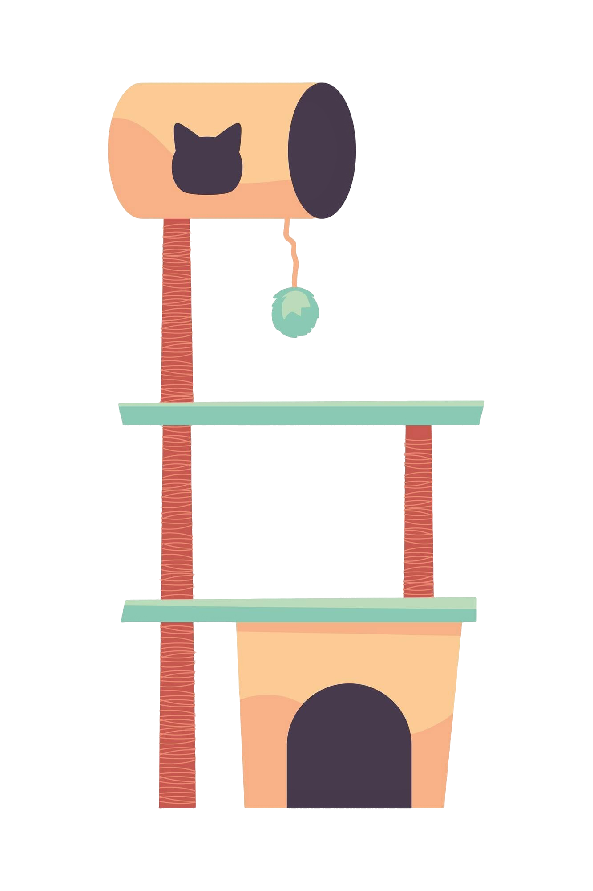

(Без теми)

HEJDA Marek (122)
​
HRYVKO Liliia (122)
​
<!DOCTYPE html>
<html lang="en">
<head>
  <meta charset="UTF-8">
  <meta name="viewport" content="width=device-width, initial-scale=1.0">
  <title>kotik</title>
  <style>

  html,
  body {
    width: 100%;
    height: 100%;
    justify-content: center;
    align-items: center;
    position: relative;
  }

  body {
    box-sizing: border-box;
    background-color:beige;
    justify-content: center;
    align-items: center;
  }

  .wrap {
    position: absolute;
    left: 50%;
    top: 50%;
    transform: translate(-50%, -50%);
  }

  .cat {
    position: absolute;
    transform: translate(-50%, -50%);
  }

  .lico {
    background-color:darkgray;
    width: 200px;
    height: 164px;
    border-radius: 50%;
    position: absolute;
  }

  .left-ucho,
  .right-ucho {
    width: 0;
    height: 0;
    border-bottom: 60px solid rgb(137, 137, 137);
    border-left: 42px solid transparent;
    border-right: 42px solid transparent;
    position: relative;
  }

  .left-ucho {
    bottom: 30px;
    transform: rotate(-35deg);
  }


  .right-ucho {
    bottom: 90px;
    left: 125px;
    transform: rotate(35deg);
  }

  .glaz-l,
  .glaz-r {
    width: 40px;
    height: 40px;
    border-radius: 50%;
    background-color:rgb(255, 255, 255);
    position: relative;
  }

  .glaz-l {
    bottom: 65px;
    left: 45px;
  }

  .glaz-r{
    bottom: 105px;
    left: 125px;
  }

  .zrachok {
    width: 30px;
    aspect-ratio: 1/1;
    background-color:rgb(77, 129, 91);
    position: relative;
    border-radius: 50%;
    top: 4px;
    left: 5px;
  }

  .svet {
    width: 8px;
    height: 8px;
    background-color: rgb(0, 0, 0);
    position: relative;
    border-radius: 50%;
    top: 8px;
    left: 12px;
    animation: looking 3s linear infinite alternate ;
  }

  @keyframes looking {
    0%{
      translate: 0px 10px;
    }


    100%{
      translate: 10px 4px;    
    }
  }

  .ten {
    width: 7px;
    height: 7px;
    background-color: #fefefe;
    position: relative;
    border-radius: 50%;
    top: -2px;
    left: 20px;
  }

  .nos {
    width: 20px;
    height: 18px;
    background-color: rgb(248, 200, 195);
    border-radius: 49% 51% 50% 50% / 10% 10% 90% 90%;
    position: relative;
    bottom: 103px;
    left: 96px;
  }

  .nos:hover{
    transition: scale 1s ease;
    animation: bl 5s infinite, bigger 5s infinite ;
    position: relative;
  }

 

  @keyframes bigger{
    0%{


      background-color: rgb(248, 200, 195) ;
    }
    100%{
      background-color:rgb(255, 25, 0);
      scale: 2;
      border-radius: 50%;
    }
  }

  .us1,
  .us2 {
    background-color: rgb(248, 200, 195);
    height: 16px;
    width: 1px;
    position: relative;
  }

  .us1 {
    transform: rotate(75deg);
    left: 4px;
    top: 12px;
  }

  .us2 {
    transform: rotate(-75deg);
    left: 14px;
    top: -5px;
  }

  .cat-telo {
    background-color: darkgray;
    width: 210px;
    height: 200px;
    position: relative;
    top: 146px;
    left: 40px;
    border-radius: 25% 80% 100% 0% / 25% 100% 0% 100%;
  }

  .lapa1,
  .lapa2 {
    background-color: darkgray;
    height: 22px;
    width: 33px;
    position: relative;
    top: 175px;
    border-radius: 0% 100% 49% 51% / 0% 0% 100% 100%;
  }

  .lapa2 {
    top: 200px;
    left: 60px;
  }

  .tail {
    background-color: darkgray;
    width: 168px;
    height: 25px;
    position: relative;
    top: 96px;
    left: 197px;
    border-radius: 0 20px 20px 0;
    transform: rotate(-25deg);
  }

  @keyframes mach {
    0%{
      transform-origin: left ;
      transform: rotate(-15deg);
    }
    25%{
      transform-origin: left;
      transform: rotate(-30deg);
    }
    50%{
      transform-origin: left;
      transform: rotate(-15deg);
    }
    75%{
      transform-origin: left;
      transform: rotate(-30deg);
    }
    100%{
      transform-origin: left;
      transform: rotate(-15deg);
    }
  }

  .tail.mach{
    translate: 0px 35px;
    transition: width 2s;
    animation: mach 3s linear infinite alternate ;
  }

  .bg{
    width: 100%;
    background-color:darkcyan;
    height: 265px;
    position: absolute;
    bottom: 0px;
  }
  .ball{
    background-color: salmon;
    border-radius: 50%;
    animation: play 3s infinite alternate ease-in-out;
    top: 200px;
    width: 20px;
    aspect-ratio: 1/1;
    position: absolute;
  }

  @keyframes play {
    100% {
      translate: 1050px;
    }
  }

  h1,
  h2{
    position: relative;
    justify-self: center;
    align-self: center;
  }

        @keyframes bl{
            0%{
                scale: 1;
            }
            18%{
                opacity: 100%;
            }
            49%{
                opacity: 100%;
                scale: 4;
            }
            50%{
                scale: 5;
                opacity: 0%;
            }
            100%{
                opacity: 0%;
            }
        }
  .dom{
    width: 600px;
    height: 750px;
    position: relative;
    bottom: 680px;
  }
  </style>
</head>
<body>
  <h1>Move your cursor my nose!</h1>
  <h2>as a secret, tap on my tail...</h2>
  <div class="bg">
    
  </div>

  <div class="wrap">
    <div class="cat">
      <div class="lico">
        <div class="left-ucho"></div>
        <div class="right-ucho"></div>
        <div class="glaz-l">
          <div class="zrachok">
            <div class="svet"></div>
            <div class="ten"></div>
          </div>
        </div>
        <div class="glaz-r">
          <div class="zrachok">
            <div class="svet"></div>
            <div class="ten"></div>
          </div>
        </div>
        <div class="nos">
          <div class="us1"></div>
          <div class="us2"></div>
          <div class="tlama"></div>
        </div>
       
      </div>
      <div class="cat-telo">
        <div class="lapa2"></div>
        <div class="ball"></div>
        <div class="lapa1"></div>


        <div class="tail"></div>
      </div>
    </div>

  </div>

</body>
<script>
  function hvost() {
    let tail = document.querySelector(".tail");
    tail.classList.toggle("mach")
  }
  document.querySelector(".tail").addEventListener("click", hvost);
</script>
</html>